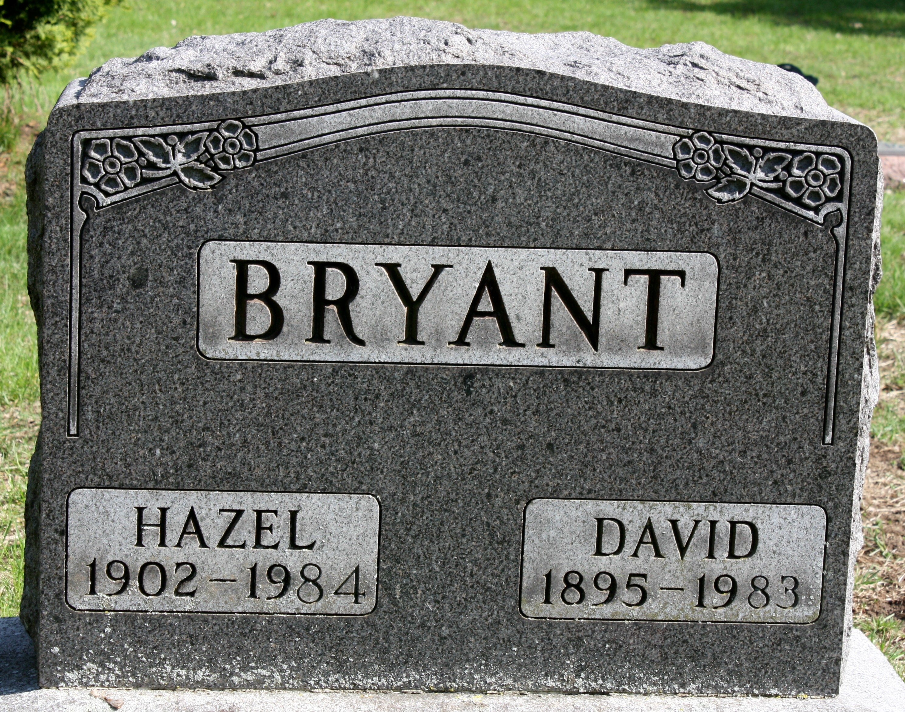
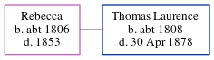

David Bryant 1895 - 1983
[ Home ] | [ Calendar ] | [ Surnames Index ] | [ Errors ] | [ Family History ]The child of Edgar Bryant and Catherine Sergeant, David Bryant, the third cousin three-times-removed on the mother's side of Nigel Horne, was born in La Porte, LaPorte, Indiana, USA on 9 Jun 18951,2,3,4,5,6,7. He married Hazel Lutes in Elkhart, Elkhart, Indiana, USA on 29 May 19218.
During his life, he was living in Hanna, LaPorte, Indiana on 1 Jun 190010 and on 15 Apr 191011; in LaPorte, Indiana, USA on 1 Jan 19209; and at 415 E Simonton Street, Osolo, Indiana on 4 Apr 193012 and on 15 Apr 19404.
He died on 16 Jan 1983 in Elkhart3,6 and was buried there at Rice Cemetery after 16 Jan 19833.
Parents
- Edgar Parrish was born in Nov 1849
- Catherine was born on 1 Jul 1854
Citations
- Indiana, Marriages, 1780-1992 - Findmypast
- Social Security Death Index - Findmypast
- U.S., Find A Grave Index, 1600s-Current Ancestry.com Operations, Inc.
- US Census 1940 - Findmypast (was age 44 and the head of the household)
- United States Marriages - Findmypast
- United States Obituary Notices - Findmypast
- World War I Draft Registration Cards - Findmypast
- United States Marriages - Findmypast
- US Census 1920 - Findmypast (was age 24 and the son of the head of the household)
- US Census 1900 - Findmypast (was the son of the head of the household)
- US Census 1910 - Findmypast (was age 15 and the son of the head of the household)
- US Census 1930 - Findmypast (was age 34 and the head of the household)
Media
David Bryant - Hazel Lutes - Headstone

1940 US Census

1930 US Census

Indiana, Marriages, 1780-1992 - R_327763490
Indiana Marriages 1811-1959 - R_21670086561
Social Security Death Index - USBMD/SSDI/308033489
US Census 1900 - USC/1900/004118635/00265/074
US Census 1920 - USC/1920/004965825/00478/100
US Census 1940 - USC/1940/1463129540
United States Marriages - FS/MAR/37998816/1
1910 US Census Transcription - USC-1910-004971221-00384-031
United States, World War One (WWI) Draft Registration Cards,1917-1918 Transcription - USM-WWIDR-1669491465
1930 US Census Transcription - USC-1930-004950600-00616-007
United States Marriages - R_327763490/1
United States Obituary Notices - US/TRIB/035153767
United States Marriages - R_21670086561/1
Family Tree
Map
Generated by ged2site. Last updated on Jul 3, 2024
Known Issues
Location for 1 Jun 1900 (Hanna, LaPorte, Indiana, USA) differs from mother's (Hanna, La Porte, Indiana, USA)
1 Jun 1900: Not living with either parent in childhood when aged 4
May have been living with father on 15 Apr 1910, but the addresses don't match or aren't detailed enough to be sure
May have been living with father on 1 Jan 1920, but the addresses don't match or aren't detailed enough to be sure
Adding date of burial as 'aft 16 Jan 1983'